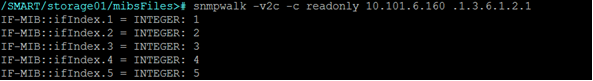
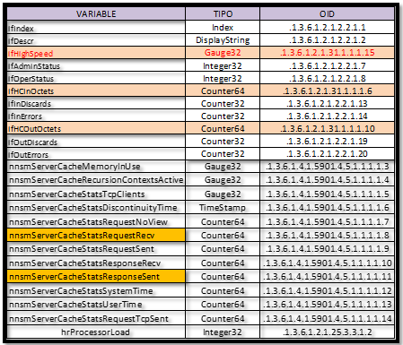
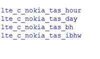
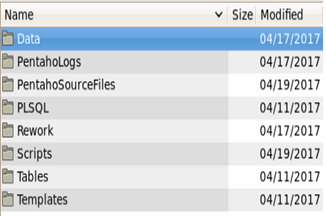
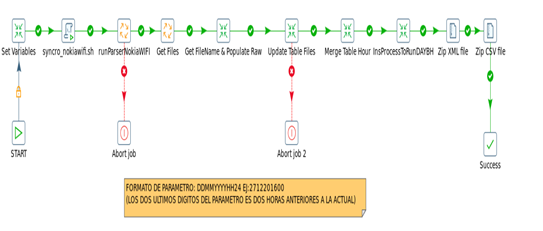
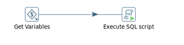
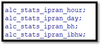
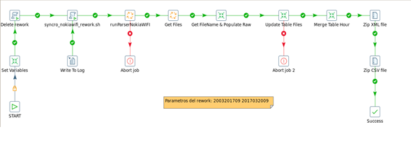
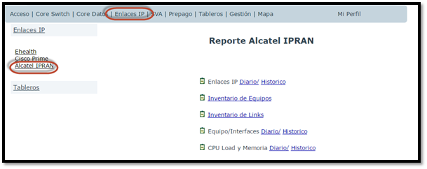

Alcatel IPRAN (XML)¶
1. OBJETIVO¶
El objetivo del documento será el de presentar y explicar los procesos que genera IPRAN.
2. ALCANCE¶
Áreas involucradas: Performance de Red
3. DEFINICIONES¶
Cortado: Servidor UNIX en donde se importan los archivos desde el proveedor. El nombre del servidor es cortado.claro.amx y la dirección IP física es 10.105.146.8. Falda: Servidor de desarrollo en donde se desarrollan todos los proyectos antes de su pasaje a producción.
4. DESCRIPCION GENERAL¶
El IPRAN abarca todos los routers Alcatel que tiene instalado Claro. Estos equipos se encuentran en Argentina, Uruguay y Paraguay. Los IPRAN se conectan a tramas E1, SDH, topología en anillo, a celdas, entre otros. Hay dos gestores que se utilizan: uno se llama SAM y otro se llama PNM.
5. MACRO FLUJO DEL PROCESO¶
En IPRAN hay cuatro macroflujos.
  
IpranSyncroXML.sh
Este Script corre cada 5 minutos copiando los XML que existan, los parsea y los inserta en la raw. Los Macroflujos de las tablas raw se muestran a continuación.


De la última tabla RAW tenemos varios procesos macroflujos que le suceden:

- SumIPRAN_HourEndToEnd.kjb
6. DESCRIPCIÓN DETALLADA¶
6.1. Datos Origen¶
- Server Origen: 10.84.92.20
- Path Origen: /opt/5620sam/server/xml_output
- Usuario: nokia
- Password: claro123
- Cantidad de archivos origen y formato: vienen diferentes archivos de acuerdo a la medición. Ver documento de requerimiento.
- Frecuencia de actualización: Cada 15 minutos.
- Tipo de archivo: XML
6.2. Datos Destino¶
- Server Destino: cortado.claro.amx
- Tabla Files: SI
- Tabla Auxiliar: Si
- Frecuencia de corrida del proceso: 1 vez por hora y cada 5 minutos para la raw.
- Regionales: No
- RAW Si/No: Si
- Hour Si/No: Si
- Day Si/No: Si
- BH Si/No: Si
- ISABH Si/No: Si
- Países: Argentina, Uruguay y Paraguay
- Directorio Destino (File System): /calidad/NokiaAluIPRAN
6.3. Shell Copiar Archivos Origen a Destino y limpieza de los mismos¶
Scripts tienen las siguientes funciones: 1- Copiar los archivos 2- Limpieza 3- Ejecutar Pentaho
Los scripts son los siguientes: El Script NokiaWIFIEndToEnd.sh es la raíz del proceso. Los Scrips a utilizar son:
6.4. Listado de Tablas Utilizadas¶
Las tablas utilizadas son las siguientes:
Tablas RAW
alc_lags_ipran_scneolr_raw
Tabla OBJETOS
alc_cardslot_ipran_obj
Sumarizaciones
 6.5. Pentaho¶

7. CONTROLES¶
8. REPROCESO MANUAL¶
No aplica esta sub-seccion.
8. SMART¶
Los reportes en la herramienta Smart se muestran de la siguiente manera:
